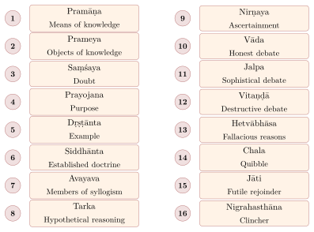
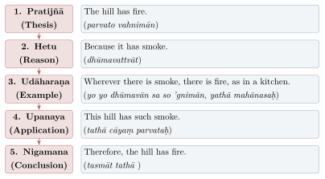
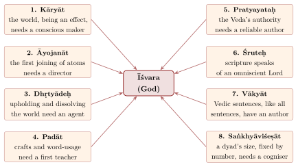
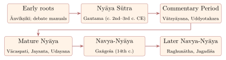
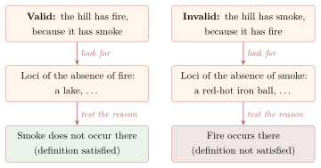

Chapter 2: Nyāya — The Science of Logic and Epistemology¶
The Opening Sūtra
pramāṇa-prameya-saṃśaya-prayojana-dṛṣṭānta-siddhāntāvayava-tarka-nirṇaya-vāda-jalpa-vitaṇḍā-hetvābhāsa-cchala-jāti-nigrahasthānānāṃ tattva-jñānān niḥśreyasādhigamaḥ
By the true knowledge of the sixteen categories — means of knowledge, objects of knowledge, doubt, purpose, example, established doctrine, members of a syllogism, reasoning, ascertainment, debate, sophistry, cavil, fallacies, quibbles, futile rejoinders, and clinchers — one attains the highest good.
— Nyāya Sūtra 1.1.1
2.1 Historical Background¶
The Nyāya school, one of the most influential systems of Indian philosophy, takes its name from the Sanskrit word nyāya (from the root i, “to go”, with the prefix ni), “that by which one is led” to a conclusion; Vātsyāyana defines it as the examination of an object by the means of knowledge (pramāṇair arthaparīkṣaṇaṃ nyāyaḥ, on NS 1.1.1). It is also known as Tarka-Śāstra (the science of reasoning), Pramāṇa-Śāstra (the science of valid knowledge), Hetu-Vidyā (the science of reasons), and Ānvīkṣikī (the science of critical inquiry). The term ānvīkṣikī is already used in the Arthaśāstra (1.2) for a discipline of reasoned investigation — there exemplified by Sāṃkhya, Yoga and Lokāyata — which Vātsyāyana later identified with Nyāya (Matilal 1998; Phillips 2012).
Historical Note: The Founder — Akṣapāda Gautama
The foundational text of Nyāya is the Nyāya Sūtra, attributed to the sage Akṣapāda Gautama (not to be confused with Siddhartha Gautama, the Buddha). The name Akṣapāda (“eyes on his feet”) is explained by a late legend that Gautama, absorbed in thought, fell into a well, after which he was granted “eyes in his feet.” The Nyāya Sūtra is a layered text: some of its material on debate may go back to the last centuries BCE, but the work as we have it is generally dated to c. 2nd–3rd century CE, since it already responds to Madhyamaka arguments of Nāgārjuna’s period (Frauwallner 1973; Potter 1977).
2.1.1 Key Texts and Commentators¶
Table 2.1 lists the principal texts and commentators.
| Text | Author | Date (approx.) | Significance |
|---|---|---|---|
| Nyāya Sūtra | Gautama | c. 2nd–3rd c. CE (older layers) | Foundational aphorisms |
| Nyāya Bhāṣya | Vātsyāyana (Pakṣilasvāmin) | c. 5th c. CE | First surviving commentary |
| Nyāya Vārttika | Uddyotakara | c. late 6th c. CE | Defence against Dignāga’s critique |
| Tātparyaṭīkā | Vācaspati Miśra | 9th or 10th c. CE | Sub-commentary |
| Nyāyamañjarī | Jayanta Bhaṭṭa | late 9th c. CE | Independent treatise, written in Kaśmīr |
| Tātparyapariśuddhi; Nyāyakusumāñjali | Udayana | late 10th – 11th c. CE | Systematic defence of Nyāya theism |
| Tattvacintāmaṇi | Gaṅgeśa | 14th c. CE | Foundation of Navya-Nyāya |
2.2 The Sixteen Categories (Padārthas)¶
The Nyāya Sūtra opens with an enumeration of sixteen topics (padārthas) whose correct understanding is said to lead to the highest good. Unlike the Vaiśeṣika categories, they are not kinds of being: most of them are topics of epistemology and debate, while the second, prameya, contains the metaphysics (Figure 2.1).

2.2.1 Means and Objects of Knowledge¶
The first category, the means of knowledge (pramāṇa), sets the agenda of the system. Nyāya accepts four: perception (pratyakṣa), cognition arising from the contact of a sense organ with its object; inference (anumāna), knowledge preceded by perception and proceeding through a mark (liṅga); comparison (upamāna), knowledge of what a word refers to through similarity with something already known; and testimony (śabda), knowledge from the words of a trustworthy person (āpta). Each is treated below. The second category, the objects of knowledge (prameya), is a list of twelve items whose right understanding matters for liberation: the self, the body, the sense organs, their objects, cognition, the mind, activity, the defects (desire, aversion and delusion), rebirth, the fruit of action, suffering, and release (apavarga). The list begins with the self and ends with release, and it shows that Nyāya’s epistemology was meant to serve an account of bondage and freedom. The remaining fourteen categories — doubt, purpose, example, established doctrine, the members of an argument, suppositional reasoning, ascertainment, and the kinds and faults of debate — describe how an inquiry or a debate proceeds from doubt to settled knowledge.
2.3 The Nyāya Theory of Perception (Pratyakṣa)¶
The sūtra’s definition of perception is short, but each of its terms was argued over for a thousand years:
Definition of Perception
indriyārtha-sannikarṣotpannaṃ jñānam avyapadeśyam avyabhicāri vyavasāyātmakaṃ pratyakṣam
Perception is that cognition which arises from the contact of a sense organ with its object, which is non-verbal (avyapadeśya), non-errant (avyabhicāri), and of a determinate character (vyavasāyātmaka).
— Nyāya Sūtra 1.1.4
Later Nyāya, from Vācaspati Miśra onwards, read the terms avyapadeśya and vyavasāyātmaka as marking two stages of perception. Indeterminate perception (nirvikalpaka) is the first, pre-conceptual grasp of an object together with its qualifiers, before they are related to one another in a judgement; determinate perception (savikalpaka) is the cognition that follows, in which the object is grasped as a thing of a certain kind, with certain qualities and a name. The distinction was Nyāya’s answer to Dignāga, for whom only the first, conceptless stage is perception at all (Chapter 10): the Naiyāyikas granted that there is such a stage, but denied that what follows it is mere construction. Navya-Nyāya, systematising earlier ideas, also admitted three “extraordinary” (alaukika) kinds of sense-contact: the perception of a universal through an individual (sāmānyalakṣaṇā), perception mediated by an earlier cognition, as when one “sees” that sandalwood is fragrant (jñānalakṣaṇā), and the perception of yogins (yogaja). The first of these was put to work in the theory of inference, as a way of knowing that all smoke, and not only the smoke one has seen, is accompanied by fire.
2.4 The Nyāya Theory of Inference (Anumāna)¶
Inference is defined in the Nyāya Sūtra (1.1.5) as knowledge “preceded by that” (tatpūrvaka), i.e. by perception, and it proceeds through a logical mark (liṅga or hetu). Nyāya inference is not a formal logic in the modern sense: its validity rests on an observed, exceptionless relation (vyāpti) between the mark and what is to be proved (Matilal 1998).
2.4.1 The Five-Membered Syllogism (Pañcāvayava)¶
The hallmark of Nyāya logic is the five-membered syllogism (pañcāvayava nyāya). Unlike the Aristotelian three-membered syllogism, the Nyāya syllogism includes explicit citation of an example and application (Figure 2.2).

2.4.2 The Terms of an Inference and Their Conditions¶
Every inference has three terms: the subject about which something is inferred (pakṣa, the hill), the property to be proved (sādhya, fire), and the reason or mark (hetu or liṅga, smoke). The validity of the inference depends on the relation between the reason and the property to be proved, which Nyāya calls pervasion (vyāpti): wherever there is smoke, there is fire.
2.4.3 Classification of Inference¶
The Nyāya Sūtra (1.1.5) names three types of inference. Their meaning was already disputed by Vātsyāyana, who offers two different interpretations; the readings below are the most common (Table 2.2):
| Type | Sanskrit | Description |
|---|---|---|
| “Like the earlier” | Pūrvavat | From cause to effect (seeing dark clouds, inferring rain) |
| “Like the remainder” | Śeṣavat | From effect to cause (seeing a swollen river, inferring past rain) |
| “Seen in general” | Sāmānyato-dṛṣṭa | From a generally observed correlation (inferring the sun’s motion from its change of position) |
In later Nyāya a valid reason is said to have five features (pañcarūpa), which extend the three features (trairūpya) of the Buddhist logicians (Chapter 10). It must be present in the subject (the hill must actually have smoke); present in at least one similar case (the kitchen, which has both smoke and fire); absent from all dissimilar cases (a lake, which has neither); its conclusion must not be contradicted by a stronger means of knowledge; and there must be no equally strong counter-reason. The last two conditions show what Nyāya added to the Buddhist scheme: an inference is assessed not only by its internal form but against everything else one knows.
2.5 The Nyāya Theory of Fallacies (Hetvābhāsa)¶
The Nyāya Sūtra (1.2.4–9) enumerates five types of hetvābhāsa (pseudo-reasons); later authors renamed and refined them:
Five Fallacies in Nyāya Logic
-
Savyabhicāra (Irregular) — The hetu is found in both sapakṣa and vipakṣa
-
Viruddha (Contradictory) — The hetu proves the opposite of the thesis
-
Prakaraṇasama (Counterbalanced) — The hetu has an equally strong counter-reason
-
Sādhyasama (Unproved) — The hetu itself stands in need of proof
-
Kālātīta (Mistimed; later bādhita, “contradicted”) — The hetu is put forward for a conclusion already ruled out by stronger evidence
2.6 The Nyāya Theory of Comparison (Upamāna)¶
Upamāna (comparison or analogy) is the third pramāṇa accepted by Nyāya. It is defined as the knowledge of the relation between a name and a thing through the perception of similarity with a known object.
Definition of Upamāna
prasiddha-sādharmyāt sādhya-sādhanam upamānam
Upamāna is the means of establishing the thing to be known through its similarity to a well-known object.
— Nyāya Sūtra 1.1.6
The classic example: A person who has never seen a gavaya (a wild bovine, probably the gayal or nilgai) is told by a reliable person, “A gavaya resembles a cow.” Later, encountering an animal in the forest that resembles a cow, the person recognizes: “This is the animal called gavaya.” The knowledge “This is a gavaya” arises not from perception alone (the person has never seen one before), nor from inference, nor from testimony (which only said it resembles a cow) — but from comparison.
The status of comparison as an independent means of knowledge was contested. Sāṃkhya and Vaiśeṣika reduced it to inference or perception, and the Buddhists rejected it. Mīmāṃsā accepted it but defined it differently, as the knowledge that the remembered cow is similar to the animal now seen, rather than as knowledge of a word’s referent; the Jain logicians treated it as a form of recognition (pratyabhijñā). The Naiyāyikas’ reason for keeping it separate is that its result — “this is what the word gavaya means” — links a word to a thing, which neither perception nor inference alone accomplishes.
2.7 The Nyāya Theory of Verbal Testimony (Śabda)¶
Śabda (verbal testimony) is the fourth means of knowledge. It is defined as the knowledge arising from the sentence of a trustworthy person (āpta), one who knows the matter, wishes to convey it truthfully and is able to express it. For a sentence to produce knowledge, its words must also satisfy three conditions, which Nyāya shared with Mīmāṃsā (Chapter 6): syntactic expectancy (ākāṅkṣā), by which each word calls for the others that complete its meaning; semantic fitness (yogyatā), which “fire is cold” lacks; and contiguity (sannidhi or āsatti), the utterance of the words without long interruption. Later Nyāya added a fourth, the speaker’s intention (tātparya), which decides between possible readings of an ambiguous sentence: “bring the saindhava” means salt at dinner and a horse before a journey. The role given to intention invites comparison with H.P. Grice’s account of speaker meaning, although the Indian theory was developed in a different framework (Matilal 1990).
Nyāya distinguishes secular testimony (laukika), the statements of trustworthy persons about worldly matters, from Vedic testimony (vaidika). The Nyāya Sūtra (2.1.68) compares the Veda’s reliability to that of medical and mantra texts, whose effectiveness is known; later Nyāya grounds it in the omniscience of its author, God. This sets Nyāya sharply against Mīmāṃsā, which holds the Veda to be authorless (apauruṣeya) and therefore free of the faults of any author.
2.8 Nyāya Theory of Causation¶
Nyāya upholds the doctrine of asatkāryavāda or ārambhavāda — the view that the effect is a new creation, not pre-existent in the cause. This stands in opposition to Sāṃkhya’s satkāryavāda.
Nyāya’s Three Types of Causes
-
Samāvāyi-kāraṇa (Material / Inherent Cause) — The material out of which the effect is produced, in which the effect inheres by the relation of samavāya. E.g., threads are the inherent cause of cloth.
-
Asamavāyi-kāraṇa (Non-inherent Cause) — That which resides in the material cause and helps produce the effect. E.g., the conjunction (saṃyoga) of the threads is the non-inherent cause of cloth.
-
Nimitta-kāraṇa (Efficient / Instrumental Cause) — The agent or instrument that brings about the effect. E.g., the weaver and the loom are efficient causes of cloth.
The Nyāya-Vaiśeṣika argument against satkāryavāda proceeds as follows: if the effect already exists in the cause, then production is meaningless; there would be no difference between the caused and the uncaused; and the activity of the agent would be purposeless.
2.9 The Self (Ātman)¶
The Nyāya school gives one of the most careful defences of a self in Indian philosophy, worked out above all against the Buddhist denial of the self (anātman). The sūtra names the self’s marks:
The Self as the Substrate of Experience
icchā-dveṣa-prayatna-sukha-duḥkha-jñānāny ātmano liṅgam
Desire, aversion, effort, pleasure, pain, and cognition are the marks of the self.
— Nyāya Sūtra 1.1.10
The argument behind this sūtra can be reconstructed in three steps. First, desire, effort, pleasure, pain and cognition are qualities, and every quality inheres in a substance. Secondly, they cannot inhere in the body, since a corpse has a body but none of them; nor in the senses, since each sense grasps only its own objects, whereas the same subject both sees and touches one and the same thing — the argument with which the third book of the Nyāya Sūtra opens (3.1.1); nor in the mind (manas), which is atomic and serves only as an instrument of attention. Thirdly, they must inhere in one enduring subject, since I desire now what I enjoyed before: desire presupposes the memory of past pleasure, and memory presupposes that the one who remembers is the one who experienced, for no one remembers what another has seen. That subject is the self (Table 2.3).
| Argument | Reasoning | Buddhist Counter |
|---|---|---|
| From memory | Memory of “I experienced X” requires a continuing subject | Memory is a new mental event, not proof of continuing self |
| From desire | “I want X again” presupposes identity of the desirer and the past experiencer | Desire arises from causal chain, not from a persistent self |
| From moral responsibility | Karma requires an enduring agent who reaps what it sows | Karmic continuity through consciousness-stream suffices |
| From recognition | “This is the same object I saw before” requires a persisting recognizer | Recognition is a fresh cognition arising from saṃskāras |
| From the unity of experience | One subject perceives through five senses; this requires a unifier | The mind coordinates sense data without a self |
The Buddhist reply, given in the right-hand column, does not deny the facts of memory and desire but explains them differently. What makes my memory mine is not a persisting substance but a causal series: an experience leaves a trace in a stream of momentary events, and a later event of the same stream is the recollection. Uddyotakara and his successors answered that a series is not one thing and cannot be the single subject that “I” refers to; the Buddhists answered that “I” refers to the series only conventionally. The dispute lasted as long as Buddhism remained in India, and Udayana’s Ātmatattvaviveka is its most elaborate Nyāya statement (Matilal 1986).
The self that emerges is eternal, all-pervading and many — each living being has its own — and it is a substance. Consciousness, however, is not its nature but an adventitious quality (āgantuka guṇa), which arises only when the self is joined to a body, senses and mind. This distinguishes the Nyāya self from the self of Advaita, which is consciousness, and from the Sāṃkhya puruṣa, which is essentially conscious. In liberation the Nyāya self exists without any qualities, including consciousness, and Vedāntin critics mocked such a liberation as the existence of a stone (pāṣāṇavat). The Naiyāyika’s reply was that the absence of all pain is worth having even at the price of all pleasure, since pleasure is always mixed with pain.
2.10 God (Īśvara)¶
The Nyāya Sūtra itself says little about God (4.1.19–21), and Vātsyāyana’s theism is modest. Systematic arguments were developed later, largely in response to Buddhist critiques. Udayana’s Nyāyakusumāñjali (“A Handful of Flowers of Logic”, late 10th or 11th century) is the most systematic Indian treatise arguing for the existence of God. It answers Buddhist and Mīmāṃsaka objections, and its fifth chapter opens with a verse listing eight grounds of proof: kāryāyojanadhṛtyādeḥ padāt pratyayataḥ śruteḥ / vākyāt saṅkhyāviśeṣāc ca sādhyo viśvavid avyayaḥ (5.1; Figure 2.3).

The first and best-known of these grounds was put in the standard form of a Nyāya inference: the earth and other such things have a maker, because they are effects, as a pot is. That they are effects was argued from their having parts: whatever is composed of parts is produced and perishes. That an effect needs a maker who knows its material was taken from experience: no pot without a potter. Buddhist critics, above all Dharmakīrti and later Śāntarakṣita in the Tattvasaṅgraha, replied that the reason is ambiguous. The kind of “effect” that shows a maker, as a pot does, is something we have seen being made; mountains and trees are not like that, and the wider sense in which they are “effects” — things that arise from causes — does not imply a maker at all. Jain critics and Mīmāṃsakas such as Kumārila added that there is no evidence that the world ever had a beginning (Potter 1977). Udayana’s answer was to defend each step of the inference against these objections and to argue that the concept of God is not empty, since God is the subject of the very inferences the opponent tries to refute. Modern readers have compared the argument from effects with cosmological arguments, and the argument from the ordering of atoms with design arguments; but Udayana’s arguments are inferences within a Vaiśeṣika ontology, and their strength depends on it.
2.11 Navya-Nyāya — The New Logic¶
The Navya-Nyāya (New Logic) school was founded by Gaṅgeśa Upādhyāya of Mithilā (14th century CE) with his Tattvacintāmaṇi, which is organised by the four Nyāya means of knowledge. It built on Udayana and absorbed the Vaiśeṣika ontology, so that the combined school is often called Nyāya-Vaiśeṣika (Ingalls 1951; Potter 1977). Its distinctive contribution was a technical language for stating cognitions and definitions with great precision, together with refined theories of universals, relations and absence. Figure 2.4 summarises the main phases of the tradition.

2.11.1 The Metalanguage of Navya-Nyāya¶
Navya-Nyāya developed a highly technical philosophical language characterized by:
-
Avacchedaka (Limitor/Delimiter) — A property or relation that fixes exactly how another property is to be taken. In “the hill has fire”, fireness (vahnitva) is the limitor of the property-to-be-proved (sādhyatāvacchedaka): what is to be proved is fire in general, not some particular fire.
-
Nirūpaka (Describer/Relator) — A property that determines the form of a relation. When we say “x has knowledge of y,” the knowledge-relation is described by the object y.
-
Pratiyogin and Anuyogin — The two relata in a relation of absence. In “the absence of a pot on the floor,” the pot is the pratiyogin (the absentee) and the floor is the anuyogin (the locus).
-
Svarūpa-sambandha (Self-linking Relation) — A relation that links directly to its relatum without requiring a further relation (avoiding infinite regress).
2.11.2 Navya-Nyāya Analysis of Absence (Abhāva)¶
One of the most refined contributions of Navya-Nyāya is its analysis of negation and absence (Table 2.4):
2.11.3 A Worked Analysis: Gaṅgeśa on Pervasion¶
The technical language is easiest to understand in use. Its most famous application is the definition of pervasion (vyāpti), the relation between reason and property-to-be-proved on which every inference depends. The chapter on pervasion in Gaṅgeśa’s Tattvacintāmaṇi begins by considering and rejecting five provisional definitions (the vyāptipañcaka, “five on pervasion”), then states and refines his own; with the commentaries of Raghunātha and Mathurānātha this became the most intensively studied text of the Navadvīpa school (Ingalls 1951; Goekoop 1967).
The first definition. The first provisional definition says that the reason is pervaded by the property to be proved when the reason does not occur in anything that possesses the absence of that property (sādhyābhāvavad-avṛttitva). Take the standard inference, “the hill has fire, because it has smoke”. The things that possess the absence of fire include a lake; smoke does not occur in a lake; and so on for every fireless place. The definition is satisfied, and the inference is valid. Now reverse it: “the hill has smoke, because it has fire”. Among the things that possess the absence of smoke is a red-hot iron ball, and fire does occur in it. The definition is not satisfied, and the inference is rightly rejected: fire is not pervaded by smoke (Figure 2.5).

Why limitors are needed. Stated loosely, the definition already goes wrong. The hill has the fire that is on it, but it lacks the fire in the kitchen; so the hill itself “possesses an absence of fire”, and smoke occurs on the hill. Taken literally, the definition would reject the standard inference. Navya-Nyāya removes the difficulty by specifying which absence is meant: the absence whose counterpositive (pratiyogin, the thing absent) is fire as limited by fireness (vahnitva) — the absence of fire in general, not of this or that fire. In the technical idiom, the counterpositiveness of the absence must be limited by the property that limits the property-to-be-proved (sādhyatāvacchedaka), and by the relation in which that property is to be proved, here contact. A parallel specification, spelled out by the commentators, is needed on the side of the reason. Smoke inheres in its own parts, and the parts of smoke contain no fire; if “occurrence” could be by any relation, smoke would occur, by inherence, in something that lacks fire. So the reason’s non-occurrence must be taken in the relation by which it serves as the reason, which is again contact. Each of these qualifications is a limitor (avacchedaka), and the analysis shows why Navya-Nyāya needed them: a general statement about properties is ambiguous until the property-bearer, the property-limiting property and the relation are all fixed.
Why the provisional definitions fail. Even when refined in this way, all five provisional definitions fail for one kind of inference, the “purely positive” (kevalānvayin), whose property to be proved is present everywhere — for example, “this is nameable, because it is knowable”. Nothing lacks nameability, so there is nothing that “possesses the absence of the property to be proved”; a definition framed in terms of such things has nothing to apply to, and fails to cover a valid inference. Gaṅgeśa therefore turns the definition round. On his own account, pervasion is the reason’s co-occurrence with a property to be proved that, taken under its limiting property, is not the counterpositive of any absolute absence found in the loci of the reason. Since no absence of nameability exists, nameability is not the counterpositive of any absence, and the purely positive inference is covered.
A further refinement. Gaṅgeśa’s definition contains one more qualification, and it shows the school’s care with “partial occurrence” (avyāpyavṛtti). The commentators explain it with a standard example. A monkey sits on the top branch of a tree. The tree has contact with the monkey, but at its roots it lacks that contact; so the absence of monkey-contact occurs in the same tree. If the definition were left as it stands, the inference “this has monkey-contact, because it is this tree” would be wrongly rejected. The definition therefore requires that the absence considered be one that does not occur in the same locus as its own counterpositive (pratiyogy-asamānādhikaraṇa): the absence of monkey-contact in the tree, which shares its locus with monkey-contact, is set aside. The full definition is long, but every clause in it answers a specific counter-example. That is the characteristic method of Navya-Nyāya: a definition is tested against cases until it neither over-extends nor under-extends, and the results are stated in a vocabulary of properties, limitors and relations precise enough to make the test decidable (Matilal 1968; Ganeri 2001). Much of the stimulus for this method, it has been argued, came from the Advaitin Śrīharṣa’s attack on Nyāya definitions (Section 7.4).
2.11.4 Cognition, Inference and Meaning in the New Logic¶
The same precision was applied to every part of the theory. Gaṅgeśa’s Tattvacintāmaṇi contains a section on pakṣatā, the condition that makes something a proper subject of inference. The older view was that inference applies where the property to be proved is still in doubt. Gaṅgeśa points out that one can infer what one already knows, and that one need not doubt in order to infer. He therefore defines pakṣatā negatively: it is the absence of certainty that the subject has the property, unless that certainty is accompanied by a desire to infer it (sisādhayiṣā). Inference is blocked only where one already knows the conclusion and has no wish to prove it.
The analysis of verbal understanding (śābdabodha) was treated in the same way. Navya-Nyāya described the cognition produced by a sentence as a structure of qualifiers and qualificands joined by relations, each fixed by its limitor, so that complex and ambiguous sentences could be disambiguated exactly (Table 2.5).
2.11.5 The Early-Modern Logicians¶
Between about 1450 and 1700 the logicians of Mithilā and, above all, Navadvīpa in Bengal made Navya-Nyāya the common technical language of Sanskrit learning. Raghunātha Śiromaṇi (c. 1460–1540) is its most original figure. His commentary on the Tattvacintāmaṇi, the Dīdhiti, repeatedly corrects Gaṅgeśa, and his short Padārthatattvanirūpaṇa reopened the Vaiśeṣika list of categories itself, arguing, among other things, that space and time need not be counted as substances distinct from God and that some items the old list ignored, such as causal power, deserve a place of their own. His successors Jagadīśa Tarkālaṅkāra and Gadādhara Bhaṭṭācārya (17th century) turned the method on language: Jagadīśa’s Śabdaśaktiprakāśikā and Gadādhara’s Vyutpattivāda analyse the meaning of case-endings, verbs and compounds in the terms of qualifier and relation.
The method spread beyond the school. Grammarians such as Kauṇḍa Bhaṭṭa and Nāgeśa, Mīmāṃsakas such as Khaṇḍadeva, Advaitins such as Madhusūdana Sarasvatī (Section 7.4) and Dharmaśāstra authors in Bengal and Mithilā wrote in its idiom. The Jain monk Yaśovijaya (1624–1688), who studied the new logic, restated Jain epistemology and the doctrine of many-sidedness in Navya-Nyāya terms in works such as the Jainatarkabhāṣā, so that the old Jain theory of standpoints could be argued with the same precision as its rivals. Jonardon Ganeri has argued that this period, often dismissed as one of scholastic stagnation, was in fact a time of self-consciously “new” philosophy, in which thinkers debated the methods of philosophy itself (Ganeri 2011). Scholars such as D.H.H. Ingalls, B.K. Matilal and J.N. Mohanty later analysed Navya-Nyāya with the tools of modern logic, while noting that it is a logic of cognitions and properties rather than of sentences or sets (Ingalls 1951; Matilal 1968).
2.12 The Nyāya Theory of Debate¶
The Nyāya theory of debate (vāda-vidhi) is an early and systematic treatment of argumentation, comparable in scope to Aristotle’s Topics and Sophistical Refutations; debate manuals with related terminology also appear in the Carakasaṃhitā (Vimānasthāna 8) and in early Buddhist texts. The fifth book of the Nyāya Sūtra is devoted to futile rejoinders and points of defeat. The three kinds of debate the sūtra recognises, and the later arguments about whether victory-seeking debate is legitimate, are discussed in Chapter 13 (Section 13.8); this section describes the apparatus itself.
The Nyāya Sūtra (5.2.1) lists twenty-two points of defeat (nigrahasthāna); the preceding chapter, 5.1, deals with twenty-four kinds of jāti, or futile rejoinder. They include not only logical errors but procedural faults, such as abandoning one’s thesis, introducing irrelevant matter or speaking out of turn (aprāptakāla). Table 2.6 gives a selection, numbered by their place in the sūtra’s list.
| Place in NS 5.2.1 | Sanskrit Name | Nature of the Violation |
|---|---|---|
| 1 | Pratijñā-hāni | Abandoning one’s original thesis under pressure |
| 2 | Pratijñāntara | Shifting to a different thesis to avoid refutation |
| 3 | Pratijñāvirodha | Contradicting one’s own stated position |
| 5 | Hetvantara | Substituting a different reason from the one first stated |
| 6 | Arthāntara | Introducing irrelevant matter |
| 7 | Nirarthaka | Uttering meaningless sounds |
| 15 | Ajñāna | Failing to understand the opponent’s argument |
| 16 | Apratibhā | Inability to reply — speechlessness |
The last three of the sixteen categories — quibble (chala), futile rejoinder (jāti) and point of defeat (nigrahasthāna) — deal with fallacious tactics. The sūtra identifies three kinds of quibble: verbal quibble, which exploits an ambiguous word; generic quibble, which confuses what is true of a class with what is true of its members; and figurative quibble, which takes a metaphor literally.
The theory was tested above all in the long debate with the Buddhist logicians. Nyāya authors from Uddyotakara to Udayana argued against Dignāga, Dharmakīrti and their successors on the reality of universals, which the Buddhists explained by exclusion (apoha); on the nature of perception, which Dignāga defined as free from conceptual construction; on the self; and on the form of argument, which Dignāga reduced to thesis, reason and example and Dharmakīrti to reason and pervasion alone. Each side sharpened its tools against the other (Matilal 1986; Dunne 2004).
2.13 The Purpose and Legacy of Nyāya¶
For the sūtra, logic was not an end in itself. Its first sūtra promises the highest good from knowledge of the sixteen categories, and its second explains how:
Liberation Through Knowledge
duḥkha-janma-pravṛtti-doṣa-mithyājñānānām uttarottarāpāye tadanantarāpāyād apavargaḥ
By the successive removal of suffering, birth, activity, defects, and false knowledge — each being caused by the one following it — liberation (apavarga) is attained.
— Nyāya Sūtra 1.1.2
Suffering arises from birth, birth from activity, activity from the defects of desire, aversion and delusion, and the defects from false knowledge (mithyā-jñāna); true knowledge removes the last link, and the chain unravels. How far the later logicians kept this purpose in view is another matter. Much of Navya-Nyāya reads as the pursuit of precision for its own sake, and its authors seldom mention liberation outside their opening verses.
Nyāya’s legacy lies above all in method. It gave Indian philosophy its standard form of argument, its theory of pervasion and its classification of fallacies, which rival schools adopted, adapted or argued against; its analyses of perception, inference, comparison and testimony set the terms of later epistemology; its theory of debate gave rules for honest and dishonest argument; its arguments for God became the standard Indian natural theology; and its later technical language became the idiom of grammar, law and theology. Some computer scientists have explored analogies between Navya-Nyāya’s analysis of qualifiers and absences and modern knowledge-representation languages, but these are modern analogies, not evidence of anticipation. The Vaiśeṣika ontology that Nyāya took over is the subject of Chapter 3; the Buddhist side of the debates is in Chapter 10; and the comparison of theories of knowledge is in Chapter 13.